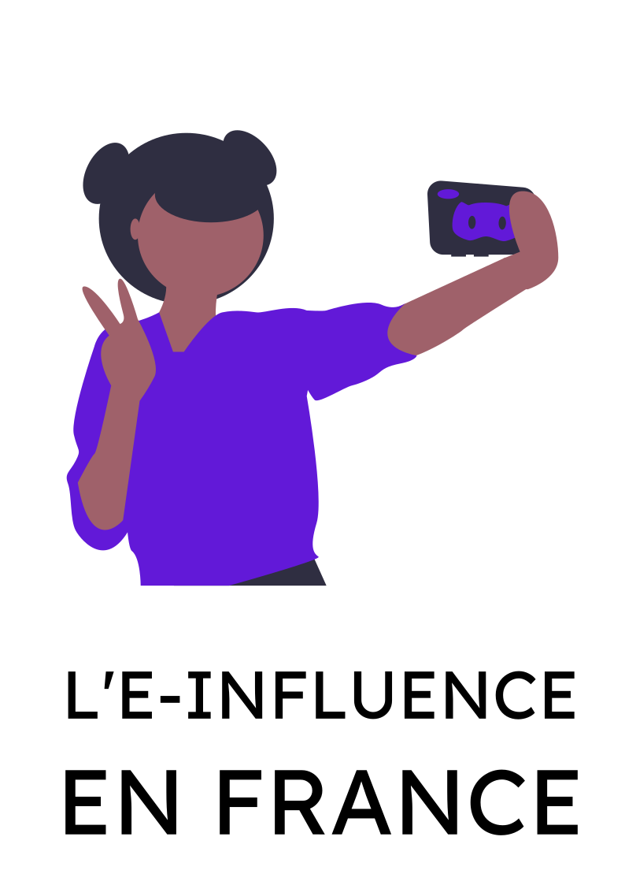
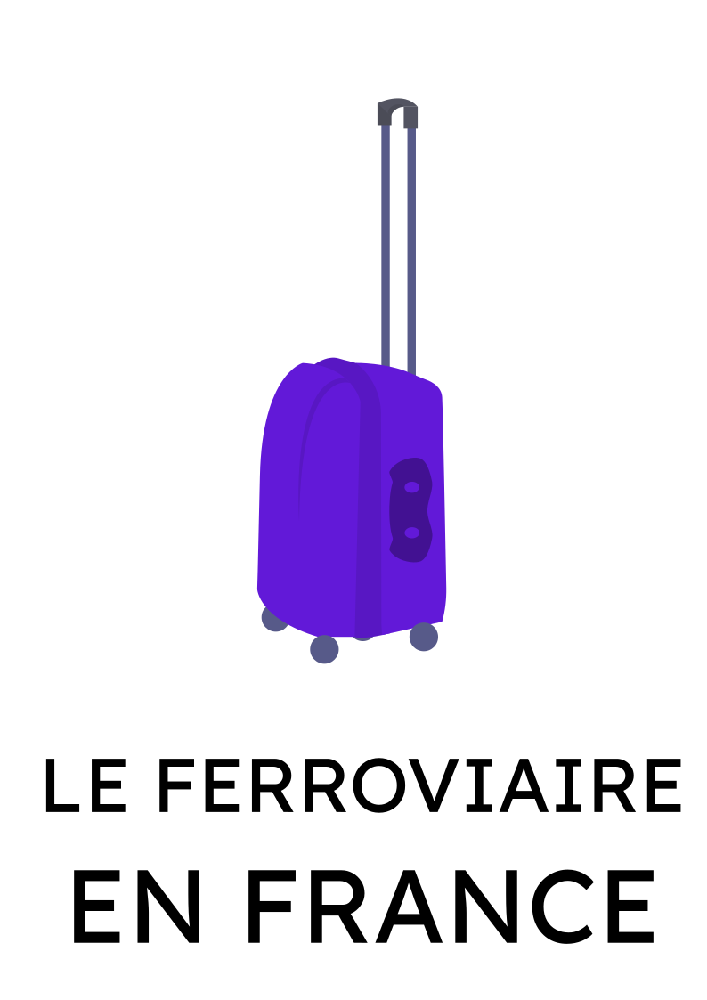

Selon IBM, 90% des données mondiales ont été créées au cours des deux dernières années.
La quantité de données qui circule sur internet est stratosphérique.
Achats sur un site d'e-commerce, publication d'une nouvelle
photo sur Instagram, ...
nous laissons derrière nous une quantité phénoménale
d'informations
sur notre personne et nos activités.


De la quantité à la qualité.
Ces données massives, souvent encodées et difficiles à comprendre, sont exploitables
grâce à des outils informatiques que nous développons.
Une infinité de
possibilités s'offre alors à vous : analyser des marchés et des comportements,
comprendre et prévoir des tendances, faire de la data-visualization, ...
Nos dernières réalisations.
12 Décembre 2020

18 Février 2021

25 Mai 2021